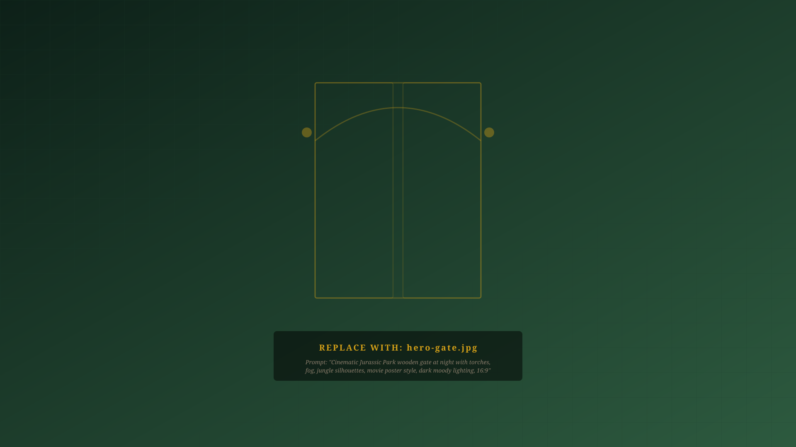
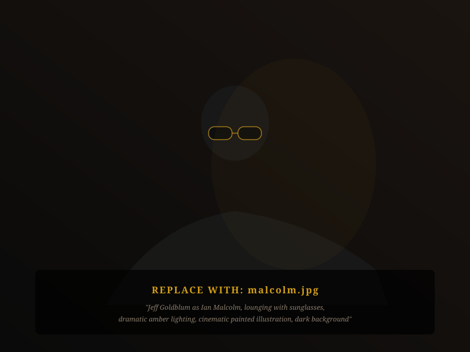
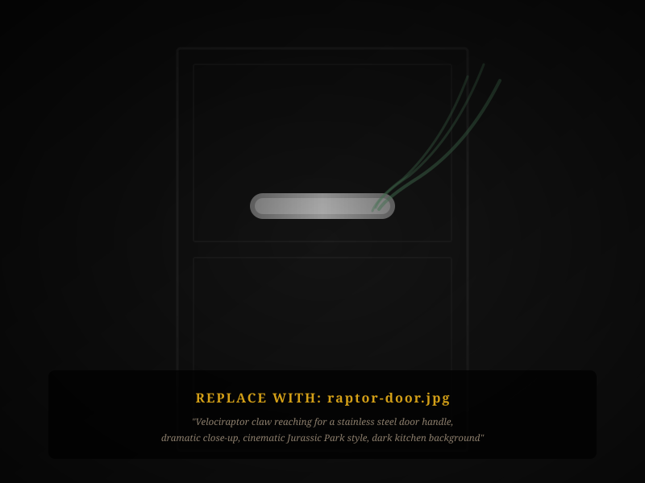

Deep 608 • Madison, WI • April 2026
CMDB or It Didn't Happen
Why Modern Tech Demands Yesterday's Fundamentals
Griffin Cass | Information Security Architect | UW Credit Union
"We spared no expense."
John Hammond, right before everything went wrong
Hammond built the most advanced theme park on Earth. Cutting-edge genetic engineering. Automated feeding systems. Electric fences rated for 10,000 volts.
But he never counted his dinosaurs.
Sound familiar? We buy the best EDR, SIEM, and CASB money can get. Then someone asks "how many assets do we have?" and the room goes quiet.
We keep stacking.
Advanced capabilities on a foundation held together by institutional knowledge.
of all known initial access in breaches comes from three things we already know how to fix.
"The T-Rex broke through the fence because of a configuration failure. The fences were off for hours before anyone noticed."
Source: Verizon DBIR 2025, 12,195 breaches across 139 countries
Three Ways Jurassic Park Fell Apart
"The fences went down."
The patching race.
Attackers mass-exploit CISA KEV vulns within 5 days. Orgs take 55 days to patch half their critical vulns. Almost half of perimeter-device vulns go completely unresolved.
5 days to exploit • 55 days to patch
"Nedry was the only one with the keys."
The configuration gap.
95% of cloud security failures are misconfigurations from human error. CIS Safeguard 4.1 (Secure Configuration) is the single most effective defense.
95% of cloud failures = misconfig
"A theme park, not an operating model."
The cost of complexity.
IBM found piecemeal, reactive programs add $1.44M to breach costs. Systematic frameworks save $1.9M per breach and resolve incidents 80 days faster.
$1.9M saved per breach with frameworks
Source: Verizon DBIR 2024/2025, SOCRadar, OWASP, IBM Cost of a Data Breach 2025
What if there was a system that could actually run the park?
- → Defends against 77% of the most common attack techniques
- → Maps to 25+ regulatory frameworks you're already juggling
- → Tells you exactly what to do first, second, and third
- → Has free tools to get started today
- → Gives your board a single number they can track
CIS Controls v8.1
18 Controls • 153 Safeguards • 3 Implementation Groups
By your powers combined…
Captain Planet needed all five rings in order. CIS works the same way.
Nobody wanted to be the Heart kid. Nobody wants to own Security Awareness Training. CIS says they're both essential.
"They never counted the dinosaurs."
What CIS actually requires, and what Grant's counting lesson tells us.
What CIS actually requires
- Safeguard 1.1: Every asset (devices, servers, network gear, IoT, cloud instances, VMs) with address, owner, department, and approval status.
- Safeguard 1.2: Address unauthorized assets weekly.
- Safeguard 2.1: Inventory all software, including SaaS, AI tools, and anything with a login.
Grant's counting lesson
"InGen counted 238 animals. Grant found more. Your inventory has the same blind spots:"
- Zero-day drops? Query by software version.
- CISO asks about scope? Filter by department.
- Auditor wants evidence? Export by approval status.
62% of breach victims didn't know they were vulnerable.
Source: Ponemon/ServiceNow
"Life, uh… finds a way."
Dr. Ian Malcolm, on ungoverned systems
The dinosaurs were engineered to be all-female. They bred anyway. Your AI tools were scoped to be read-only. They're writing now.
Your copilot is indexing data you haven't classified.
- Agentic workflows are getting broad permissions before anyone defines "appropriate access."
- AI tools are adopted faster than your software inventory can track. CIS Safeguard 2.1 says they belong in it.
- CIS partnered with Astrix Security to address MCP environments: credential exposure, uncontrolled data flows. Source: CIS/Astrix Security Partnership 2025

"Clever girl."
The raptors learned to open doors. Your service accounts already have the keys.
Non-human identities to human identities in a typical enterprise.
API keys, service accounts, OAuth tokens, automation credentials
Most orgs can tell you every human with access. Almost none can tell you every machine with access. CIS Control 5.1 (IG1): inventory all accounts. Safeguard 5.5 (IG2): named owner and review date.
Source: CIS/Astrix Security, "NHIs represent the biggest blind spot in our identity perimeter"

The IG1 cheat code.
56 safeguards. One-third of the framework. No specialist tools required.
of ATT&CK techniques across the top 5 attack types
with commercial off-the-shelf tools, no specialists required
On the Oregon Trail, the families who packed essentials survived. The ones who overloaded on ammo and skipped medicine died of dysentery.
Source: CIS Community Defense Model v2.0, mapped to MITRE ATT&CK
One operating system for the whole park.
Hammond needed separate systems for fences, feeding, tracking, and security. You don't.
| CIS Safeguard | PCI DSS v4 | NIST CSF | FFIEC | GLBA |
|---|---|---|---|---|
| 4.1 Secure Config | Req. 2 | PR.IP-1 | Domain 3 | §314.4(c) |
| 5 Account Mgmt | Req. 8 | PR.AC-1 | Domain 3 | §314.4(c)(3) |
| 8 Audit Logs | Req. 10 | DE.AE | Domain 3 | §314.4(d)(2) |
| 14 Sec. Training | Req. 12.6 | PR.AT | Domain 1 | §314.4(e) |
25+ frameworks mapped in the free CIS Controls Navigator. All FFIEC member agencies (incl. NCUA) endorsed CIS.
Source: CIS Official Mappings, FFIEC 2019 Joint Statement
"We want to open the park to visitors."
Your leadership has the same asks. CIS already has an answer.
"We need to adopt AI tools."
Safeguard 2.1: inventory them. 3.1-3.6: classify the data they touch. 8.1-8.3: log what they do. You're not blocking innovation. You're making it auditable.
"We're moving to the cloud."
CIS v8 removed perimeter assumptions. Safeguard 1.1 includes cloud instances. Controls 15.1-15.2 cover service providers. CIS publishes benchmarks for AWS, Azure, GCP, and M365.
"How do we handle remote/hybrid?"
MFA for external apps (6.3), remote access (6.4), endpoint encryption (3.6), DNS filtering (9.2), session locking (4.3). All IG1. You probably have most of these. Now document it.
"Are we compliant?"
Don't answer framework by framework. Map your CIS implementation to every framework simultaneously using the free Controls Navigator. One program, many compliance artifacts.
Parks that actually opened safely.
Large Midwestern Credit Union (200K+ members)
"The CIS Controls are the primary tool to determine what we need to do first and extremely valuable from a strategy standpoint."
Built risk burn-down scorecards. Aligned CIS with FFIEC.
City of Portland, Oregon
"Haphazard and reactive… little systematic thinking." (Pre-CIS)
Two controls per year from 2011. Fewer infections, common vocabulary, savings funded the next phase.
BMW Group (159K employees, 140+ countries)
Integrated all CIS Implementation Groups since 2022. CIS Controls Navigator for cross-framework mapping.
Source: Published CIS case studies at cisecurity.org
The board wants a number. Give them this.
1. Policy Defined
2. Control Implemented
3. Control Automated
4. Control Reported
"The organization has implemented [X] of 56 IG1 safeguards ([Y]%). Of those implemented, [Z]% have a maturity rating of 'Generally Effective' or higher. This brings the overall cybersecurity residual risk to [Moderate/Low], which is within the Board's defined Risk Appetite."
CIS CSAT generates this with color-coded heat maps and peer benchmarking.
"You have $0. What do you buy at the general store?"
Everything you need to start is free.
CIS Controls Navigator
Free interactive crosswalk. Map your implementation to 25+ frameworks simultaneously.
CIS CSAT (Free Tier)
Self-assessment, four maturity dimensions, peer benchmarking, and board reporting output.
CIS-CAT Lite
Automated configuration scanning against CIS Benchmarks. Find misconfigs before attackers do.
CIS WorkBench
Community resources, benchmark downloads, GPOs and scripts. Everything in one place.
cisecurity.org
The trail to IG1.
Typical IG1 implementation: 3 to 6 months. Here's how to start this week.
Independence, MO
Download CIS CSAT. Run the self-assessment for IG1. Don't inflate scores. This is your baseline.
Fort Kearney
Controls 1 & 2. Build or enrich your asset and software inventory. Spreadsheet? Admit it and start the migration.
Chimney Rock
Controls 4, 5, 6. Run CIS-CAT Lite. Enforce MFA everywhere external. Inventory service accounts. Disable anything dormant.
Oregon City
Re-run CSAT. Show progress using the board statement template. Map IG1 to PCI DSS and NIST CSF. You've arrived.
You stocked up on ammo but forgot the medicine. Don't die of unpatched vulnerabilities.
Life finds a way. So do attackers.
But if you know what you have, harden what exists, and prove it in a language everyone understands, you can actually run the park.
Thank you
Griffin Cass | Information Security Architect | UW Credit Union
Key Resources
cisecurity.org/controls • CIS Controls Navigator • CIS CSAT • CIS-CAT Lite